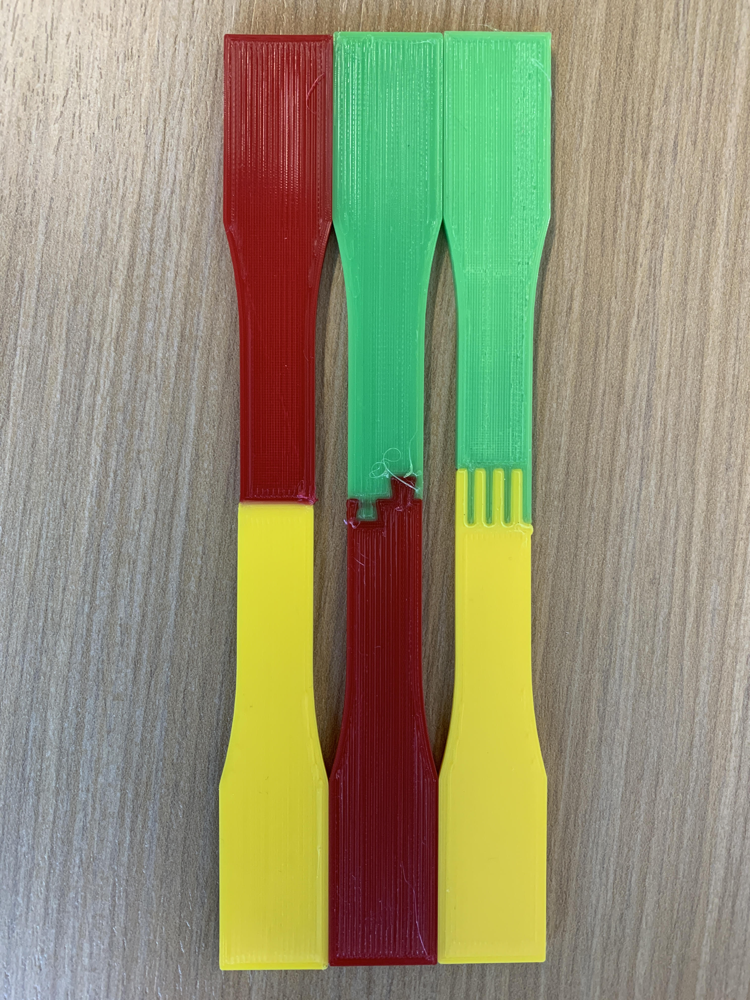
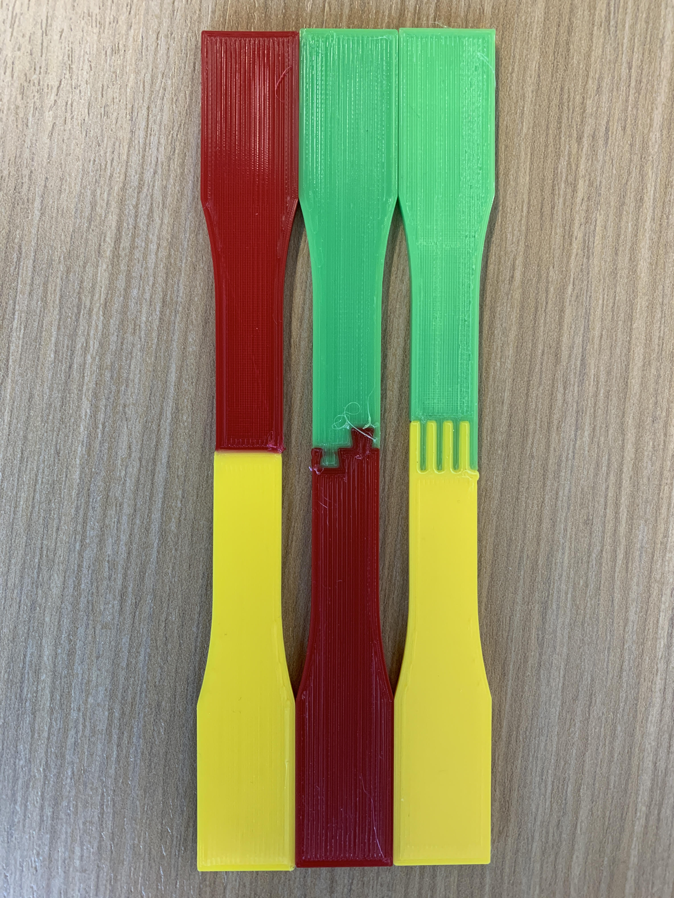

Worcester Polytechnic Institute Research
At Worcester Polytechnic Institute, I participated in two research opportunities, exploring the potential of soft robotics (leading to my Major Qualifying Project) and multimaterial 3D printing for robotic mechanisms.
During my internship as a Research Assistant at the WPI Soft Robotics Lab, I helped further research on deformable robotics. The robot I worked on, called the SalamanderBot, is mobile robot which features an actively-controlled deformable body. This body is comprised of a lasercut polyethylene sheet with perforated creates to form a Yoshimura origami pattern and is actuated by cables in three corners, giving it a maximum bending angle of 106 degrees. For the IEEE Conference paper, visit this link.
My responsibility as a Research Assistant was to manufacture, assemble, and test several Salamanderbots such that they could be connected to one another, forming a snake-like robot. I fabricated the polyethylene bodies, learning how to utilize vector editing software and using a laser cutter to cut the polyethylene sheet. To make the housing of the robot, I utilized my personal 3D printer, and optimized prints for higher quality and tight tolerancing. I also soldered and tested the main PCBs involved in controlling the robot, learning how to efficiently solder through-hole and surface mount components. After soldering, I flashed the boards with custom firmware, and then tested each actuation motor individually, debugging any errors with an oscilloscope.


I also performed research on multimaterial 3D printing, performing market studies on currently available technology. The goal of this research was to find a commerical solution to perform reliable multimaterial 3D printing on rigid and flexible filaments. I investigated solutions such as the Prusa MMU2S, the Mosaic Palette 3, the Ultimaker S3, and the E3D Toolchanger System. I spent the most time with the E3D Toolchanger, as it proved to be the most capable to fuse multiple flexible filaments in a singular layer. Once we set up the toolchanger, we investigated different mechanical interfaces between filaments and performed tensile testing to fuel research into multimaterial 3D printed soft robots. To learn more about the market study I performed, you can view my final presentation here.
 
